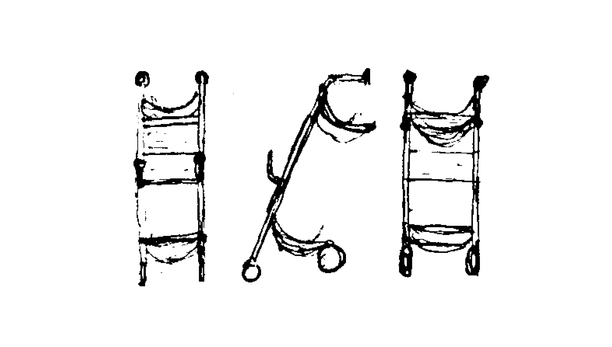
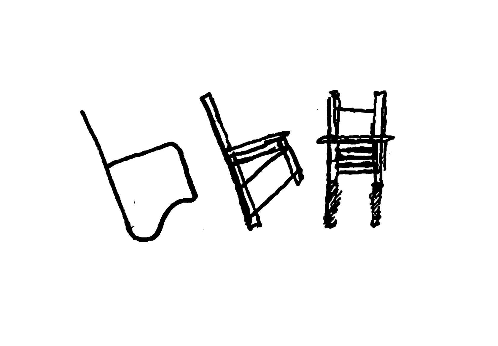

01
Interior
Hover a project for a sketch. Click the mark to open it.
Tap a project to preview it, tap again to open it.
Mechanisma
A mobile home that transforms with elevation and moving walls: open living by day, closed bedroom by night.
DEC2025-MAR2026 Solo

Immersive Isolation
The smallest, least comfortable bedroom possible: a rotated white form and a hidden camera-obscura window.
NOV2025 Solo

The Craft
A luxury micro-bathroom zoned by floor height and material, with a wall-carved sink and a heated sauna-wood step.
OCT2025 Solo

Upcoming
A new interior project, currently in development.
2025 Solo
02
Product
Hover a project for a sketch. Click the mark to open it.
Tap a project to preview it, tap again to open it.
Bornova
A rollator for dementia care that carries the textures and smell of home into unfamiliar places.
NOV2025 Solo

moveit
A swinging polypropylene chair that turns sitting still into constant, passive exercise.
NOV2024-FEB2025 Duo

Amoreux
A pair of connected lights inspired by 1950s musicals, where one reflects its glow onto the other.
FEB2024-JUL2024 Solo

03
Urban and Spatial
Hover a project for a sketch. Click the mark to open it.
Tap a project to preview it, tap again to open it.

04
Stories
Archives
Tales and Reflections: short fiction, essays, and the writing underneath the work.
Ongoing
Sketchbook
Raw, unedited drawings: the first pass before any idea is justified.
Ongoing
Graphics
Identity systems, layouts, posters, and the visual language behind the brand.
Ongoing
3D
Renders, models, and experiments built in three dimensions.
Ongoing
Photography
Frames of the everyday: light, material, and moments caught in passing.
Ongoing